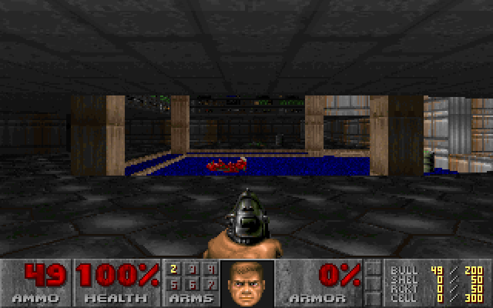

Doom in Mach
The shareware episode of Doom (1993), Knee-Deep in the Dead, rewritten from id Software's source in the Mach programming language. Play alone, or with up to three friends over the internet.

Playing
- Unzip the download anywhere. Keep
doom.exeandDOOM1.WADtogether. - Double-click
doom.exe. - Windows may say Windows protected your PC, because the program is not signed. Click More info, then Run anyway. It asks once. If it asks whether to let the game use the network, allow it.
On Linux it runs through Wine: unzip, then in a terminal in that folder run
./doom.sh. If Wine is missing it says how to install it
(sudo dnf install wine, sudo apt install wine, ...). Sound and music both work
under Wine.
| ↑ ↓ or W S | move forward and back |
| ← → | turn |
| A D | step sideways |
| Ctrl or F | fire |
| Space or E | open doors, press switches |
| Shift | run |
| 1–7 | choose a weapon |
| Esc | the menu |
Co-op with friends
Two to four players, anywhere, on Windows and Linux together. Everyone needs the same download: an older copy is turned away with “different version”, and the Co-op screen shows a six-character this copy code to compare.
- One person hosts: Esc, Co-op online, Host a game for 2
(or 3, or 4), then a skill. A room code like
KQ7M2Tappears. Send it to the others. - Everyone else joins: Esc, Co-op online, Join with a room code, type the code, press Enter.
The game starts on E1M1 as soon as everyone is in. No router or firewall settings: the games meet through a small relay server on this site. Every player's game runs in lockstep, so a slow connection makes everyone wait for it; it plays best within a country. To leave: Esc, Options, End Game.
What this is
A port of id Software's 1997 source release to Mach, with no C and no libraries beyond what Windows ships. The music comes from an emulation of the OPL2 FM chip on the AdLib and Sound Blaster cards DOS Doom played it on. The game reproduces the original's three demo recordings tic for tic, which is how it is known to behave like the original. The relay server and this page's web server, hedge, are written in Mach too.